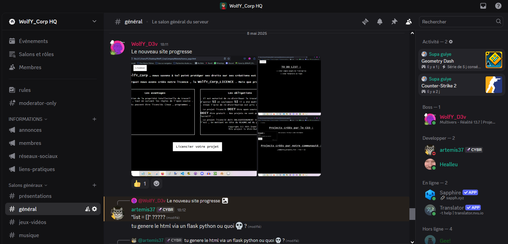

Notre serveur Discord :
La WolfY_Corp est une entreprise """officielle""" and """légale""" concentrée sur la création de jeux , de programmes et d'outils qui rendent la vie meilleure pour tout le monde !
Notre entreprise est une vraie communauté créative qui partageons les mêmes intérêts et la même philosophie .

Sur quoi travaille-t-on :
Nous restons toujours en activité , pour vous proposer les meilleurs outils .